Scene 1Warm-Up
▶ Start hereHow your Wonder Films lessons work1-minute videoOpen ▾
🎯 TodayI can…
- explain what conservation means and why people do it.
- describe ways people protect habitats and natural resources.
- give an example of a conservation solution and explain why it helps using evidence.

🔎 Mystery specimenWhat made these marks on a manatee's back?
What to do: Press Inspect specimen. Move the magnifying lens over the manatee, then tap 3 things you notice.
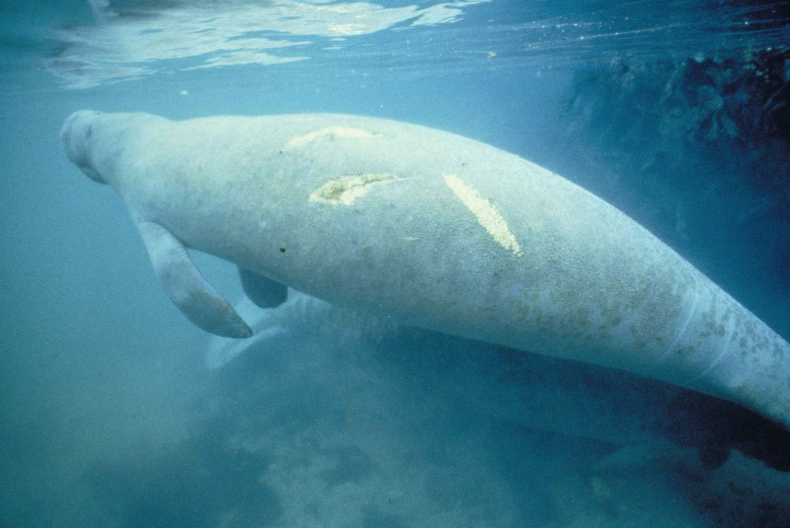
📚 Word WallWords scientists use
What to do: Tap or click each card to flip it and read what the word means.
Scene 2The Lesson
🌱 Part 1What Conservation Means
Every day, people use natural resources: water, soil, clean air, wood, and food from the land. They come from the Earth, and if we use them carelessly, they can run out or get damaged.
Conservation is protecting natural places, plants, animals, and resources so they stay healthy. It doesn't mean people can never use the land. It means making smart choices about how we use it.
🎞️ Put the scenes in orderHow did the bald eagle come back?
What to do: Drag each photo into the film strip, from first to last. You can also tap a photo, then tap a frame. Get the order right and your strip becomes a movie.
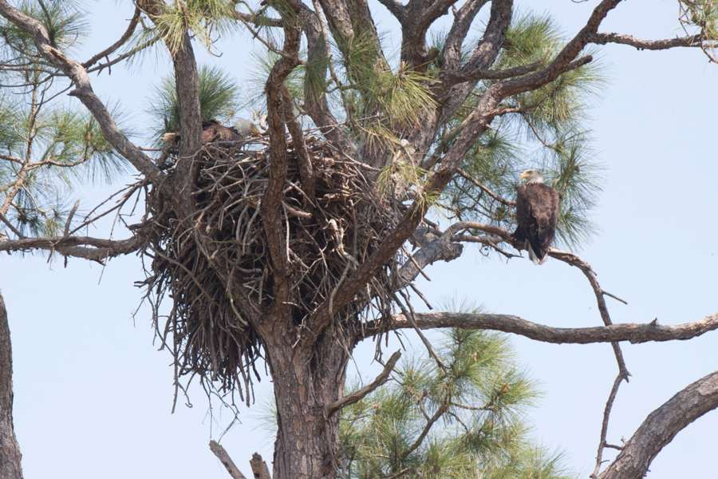
A friend says, "Conservation means people can never use nature at all." Is that right?
🏞️ Part 2How People Protect Habitats
One strong conservation tool is a park or refuge, where building and logging are not allowed and animals can live safely.
Conservation happens outside parks too. Communities plant trees and sea oats. Scientists bring back wetlands that were drained. Laws protect nesting beaches for sea turtles and birds. These are conservation solutions: actions people choose because evidence shows they work.
🧪 The Dune TestDo plants protect a sand dune?
What to do: Follow the steps one at a time. You will pick, test, and then explain.
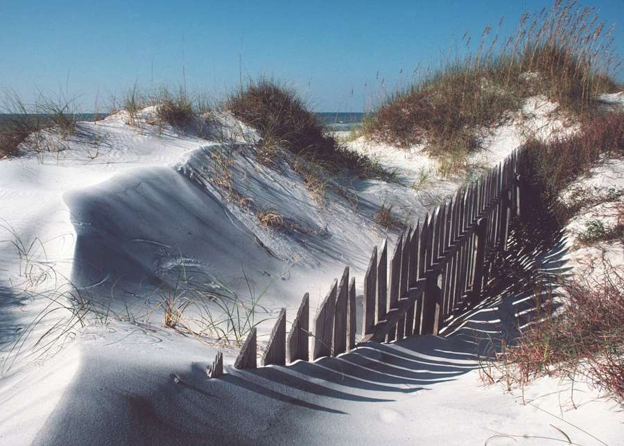
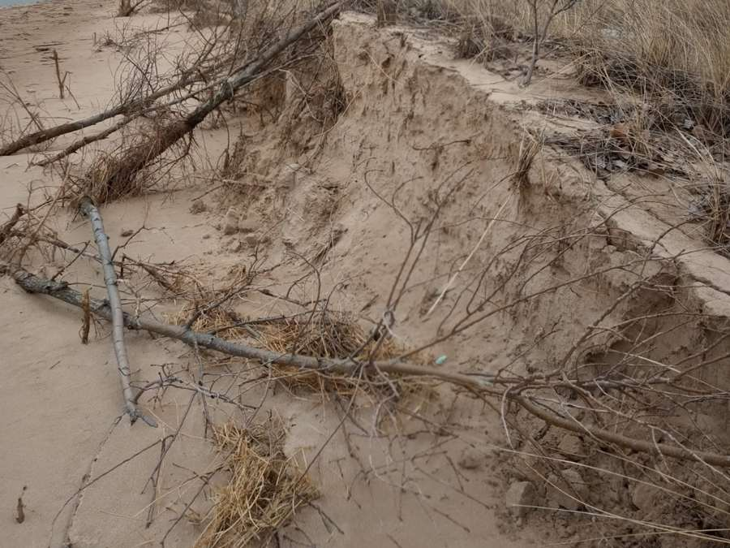
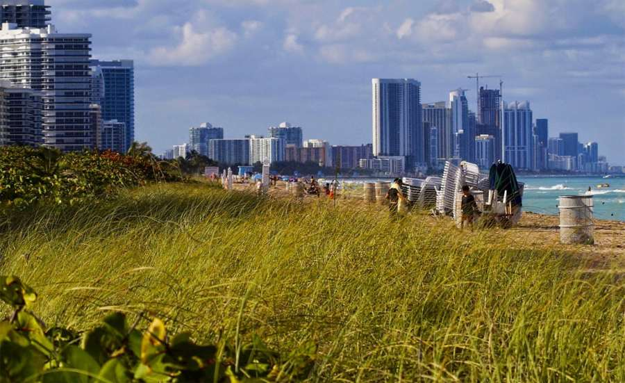
🔍 Part 3Making a Claim About Conservation
Scientists don't just say "we should protect this place." They gather evidence: they count animals, test the water, and measure how many trees are left. Then they make a claim: this solution will help, and here's why.
Anyone can say something would help. Evidence is what makes a claim convincing.
🌲 The Eagle TreeClimb down one tall longleaf pine
What to do: First, make a prediction. Then brush the glowing stop: drag across it (or tap it again and again) until the place shows.
When people protect one pine forest, who does it help?
crownTrunkForest
floor
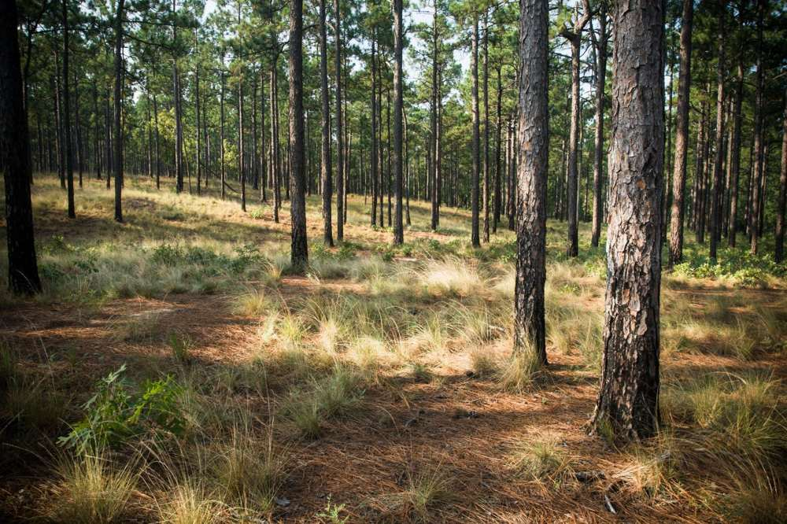
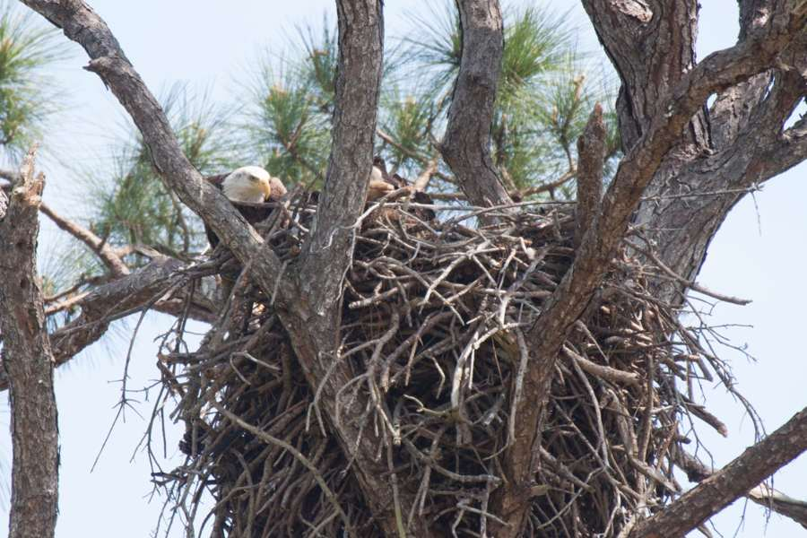
Stop 1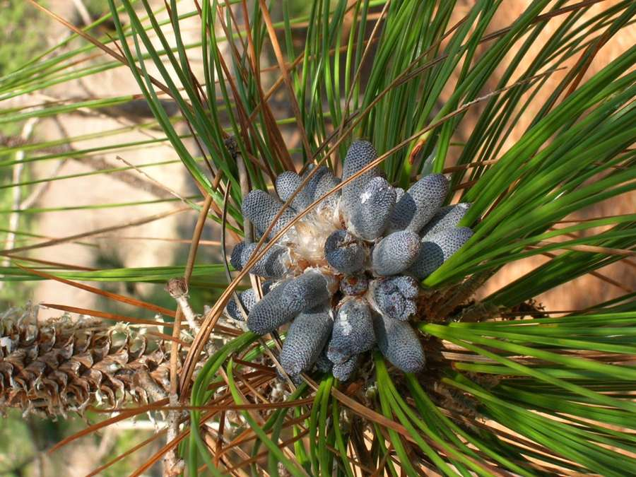
Stop 2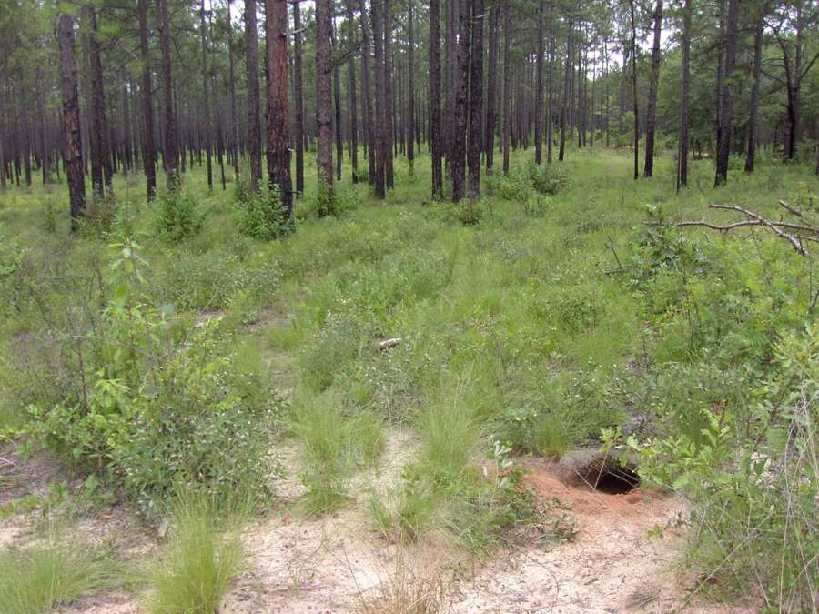
Stop 4Protect the habitat, protect them all. Saving one forest helps many living things at once. People still have to care for it: longleaf forests need small, careful fires every few years, set by trained crews.
A forest is now protected. A friend says, "Great, the job is done!" Is that right?
Scientists know manatees by their scars
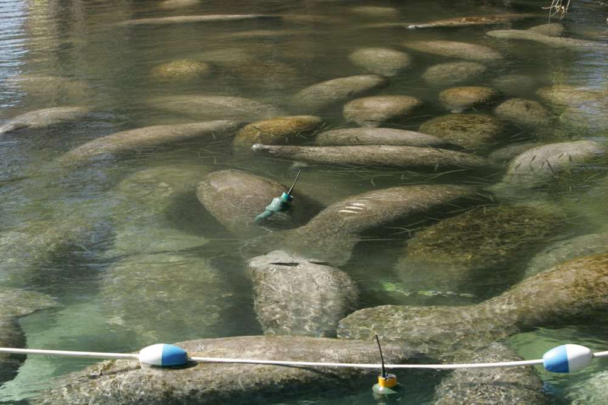
Remember the marks on the mystery manatee? Most scars like those come from boat propellers. Each manatee's scars make a pattern, a little like a fingerprint. Florida scientists photograph the scars and keep a catalog, so they can tell one manatee from another year after year.
That evidence shows how often boats hit manatees. It helped make the case for slow-speed zones, where boats must go slowly. In winter, manatees crowd into warm springs like these, which people protect as a refuge.
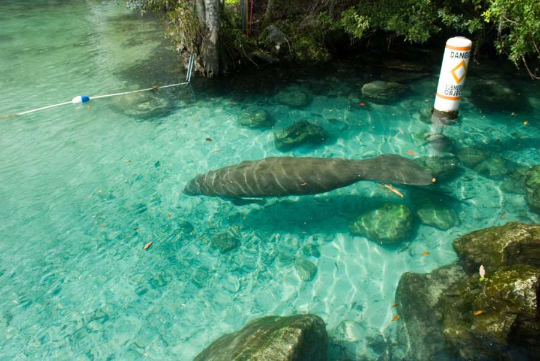
🕵️ Part 4Comeback Cases
What to do: Pick 3 cases, one at a time. Tap a clue, then pick the problem. Predict the solution that helped, and watch the place today appear.
| Case | My observation | The problem | The solution | My evidence |
|---|
🌍 Rebuild the placeUse your evidence to rebuild the place OPTIONALOpen ▾
What to do: Pick one you solved. Pick the place it points to, then pick the living things that belong there.
Pick one from your chart and explain it.
Start with: "Case __ was in trouble because…"
Scene 3Self-Check
What does conservation mean?
A beach where sea turtles nest is losing nests every year because of too many visitors and bright lights. Which conservation solution would help most?
Why do scientists gather evidence when they argue for a conservation solution?
Scene 4Assignment
🔍 Part ASort and classify
What to do: Read each one. Pick the best answer, or type your answer.
1. A city plants 500 trees along a river to stop soil from washing into the water.
2. A company dumps old chemicals into a nearby wetland to save money.
3. Scientists set up a slow-speed boat zone in a Florida bay where manatees live.
4. A family fixes a leaky faucet and turns off sprinklers when it rains.
5. Pick one action from above. In one sentence, tell why it is or isn't a conservation action.
🚀 Part BShort answer
What to do: Answer in complete sentences. Use your science words.
1. What is a natural resource? Give two examples and explain why they need to be protected.
2. Why is it important for scientists to collect evidence before claiming that a conservation solution will work?
✍️ Write and explainWhat conservation solution would you argue for?
What to do: Think of a natural place near you. Answer the three questions. Use at least two of the science words under the boxes.
Start with: "I think the best conservation solution for this place would be…"
Start with: "I know this would help because the lesson showed that…"
Start with: "This makes sense because…"
🎨 Part CDraw and label
What to do: Draw one habitat twice: damaged on the left, and helped by conservation on the right. Label what changed.
🎬 Your question from Scene 1Can you answer it now?
What do you still wonder about? Write your question here. Then answer it.
📋 My answersEverything you wrote, in one place
(Your answers show up here as you write.)
How to turn in: Copy your answers and paste them into the Canvas assignment. Or download the file and upload it. Then press Save my drawing in Part C and upload your drawing too.
✅ Checklist
What to do: Tap each item when it is done. Items you finish on the page check themselves.
- My evidence chart has 3 cases and my explanation.
- Part A: all five answers.
- Part B: questions 1 and 2.
- Part C: my drawing and both labels.
- Write and explain, with at least two science words.
🎬 Premiere my comeback storyYour exhibit
What to do: Check your exhibit. Pick the one you wrote about, add your first name, then press Premiere film.
I observed…
The problem was…
My evidence…
It tells us…
🎞️ This film's frames
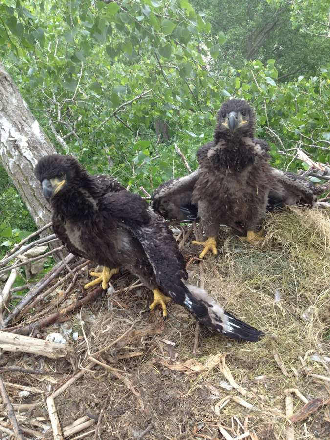
The eagle comeback
The Dune Test
The Eagle Tree
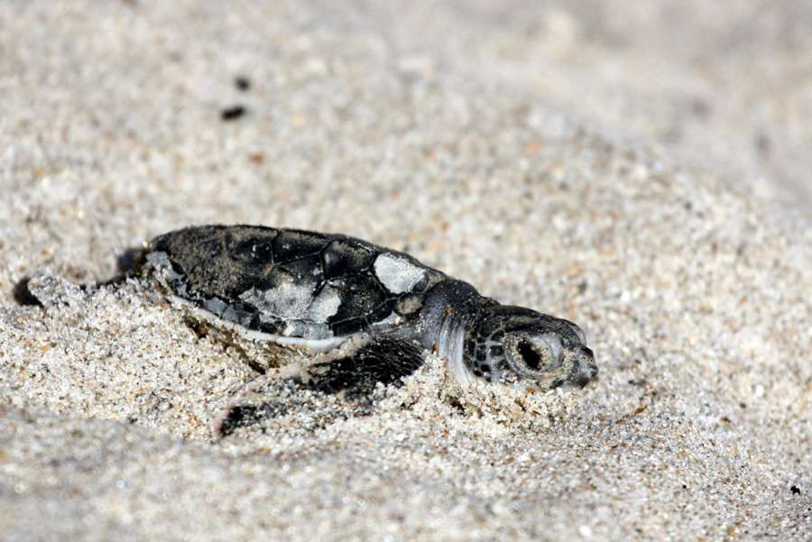
Comeback cases
Earn all four frames in the Lesson, then finish the checklist.
🔜 Coming up next24.02 · How Can We Practice Conservation?
Next time, sort real conservation actions, from saving water to protecting habitats, and decide which ones help the most.
Photo and music credits
- Sea Oats Dunes along Miami Beach, Camtistic, CC BY-SA 4.0
- Archie Carr National Wildlife Refuge (6215133140), USFWS/Southeast, Public domain
- Sunrise at Archie Carr National Wildlife Refuge (5777363954), U.S. Fish and Wildlife Service Southeast Region, Public domain
- Brown pelican flies above Pelican Island National Wildlife Refuge - DPLA - 63…, Ryan Hagerty, U.S. Fish and Wildlife Service, Public domain
- Pelican Island National Wildlife Refuge - DPLA - 55b945a84f3c4a0a73fa7198afb7…, George Gentry, U.S. Fish and Wildlife Service, Public domain
- Wood Stork - Mycteria americana, MathewTownsend, CC BY-SA 3.0
- Corkscrew Swamp Sanctuary - Trail, P. Hughes, CC BY-SA 4.0
- American Alligator in Everglades (41081534711), Trish Hartmann from Tampa, Florida, USA, CC BY 2.0
- Anhingatrail, National Park Service (public domain), Public domain
- NASA Kennedy Wildlife - Florida Scrub Jay (3), Ben Smegelsky, Public domain
- Merritt Island National Wildlife Refuge - Flickr - Rusty Clark (29), Rusty Clark from merritt usland FLA, CC BY 2.0
- Gopher tortoise entering burrow, Gary2863 at English Wikipedia, Public domain
- Picoides borealis USFWS, USFWS Photo, Public domain
- Sciurus niger shermani running 2021, LMDawson, CC BY-SA 4.0
- NASA Kennedy Wildlife - Bald Eagle (5), NASA/Glenn Benson, Public domain
- Bald eagles with young at John Heinz National Wildlife Refuge (4535059662), U. S. Fish and Wildlife Service - Northeast Region, Public domain
- Bald Eagles flying into the sunrise at Westmoreland State Park (16699779318), Virginia State Parks, CC BY 2.0
- First bald eagle egg of 2019 (32391378047), San Bernardino Nat'l Forest, Public domain
- Bald Eagle Soaring on Seedskadee NWR (12781353404), USFWS Mountain-Prairie, Public domain
- 1955. Ford tri-motor spraying DDT. Western spruce budworm control project. Po…, R.B. Pope, USDA Forest Service (1955), Public domain
- NASA Kennedy Wildlife - Bald Eagle in its nest, NASA/Matthew Porter, Public domain
- Three Sisters Springs area - DPLA - 088015b54bb24f2d6dfb40dabddba19e, Keith Ramos, U.S. Fish and Wildlife Service, Public domain
- Gopher tortoise burrow and habitat gopherus polyphemus, Pattavina Pete, U.S. Fish and Wildlife Service, Public domain
- Red-cockaded woodpecker feeding young (5806270700), U.S. Fish and Wildlife Service Headquarters, Public domain
- Pinus palustris flower, Cosmicray, CC BY-SA 3.0
- NASA Kennedy Wildlife - Bald Eagle (9), NASA/Glenn Benson, Public domain
- DDT spray 1958, CDC (1958), Public domain
- Bald Eagle Transmitter Project - Thurmond Lake (26587563282), U.S. Army Corps of Engineers Savannah District, Public domain
- 2 Eaglets by USFWS Jeremy N Moore (9183154303), U.S. Fish and Wildlife Service - Midwest Region, Public domain
- NASA Kennedy Wildlife - Bald Eagle (4), NASA/Glenn Benson, Public domain
- Longleaf Pine Savanna II (13158080455), Justin Meissen from St Paul, United States, CC BY-SA 2.0
- Manatee bearing scars on back from boat propeller, Bonde, Robert K, U.S. Fish and Wildlife Service, Public domain
- NRCSFL80001 - Florida (1809)(NRCS Photo Gallery), Photo by Tim McCabe, USDA Natural Resources Conservation Ser, Public domain
- Scarped foredune Lake Street, Visviva, CC BY-SA 4.0
- Florida Manatee FWS 1, Steve Hillebrand / USFWS, Public domain
- Music: Edward Elgar, Pomp and Circumstance March No. 1 (trio), played by "The President's Own" United States Marine Band, public domain (via Wikimedia Commons).
- Opti the owl: Optima Academy. Sound effects are made by the page. The film tells the bald eagle's comeback with real photos from different places. The eagle movie, the Dune Test, and the Eagle Tree are models; every place photo is real.